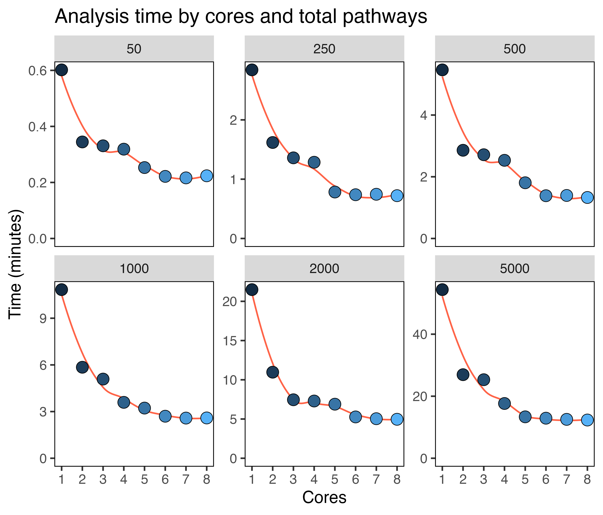

Parallel processing for faster analysis
Source:vignettes/parallel_implementation.Rmd
parallel_implementation.RmdVersion 1.5 added parallel implementation in the
compare_pathways() function, which will significantly
reduce the time taken for pathway comparisons. Users can specify this
with parallel = TRUE and cores = x. Here are
some benchmarking figures for varying numbers of cores (1-8) and
pathways (50-5000) using the default 500 cells per population. You can
see that using somewhere between 2-4 cores scales well, showing large
improvements in completion speed.
Click here for the benchmarking code
library(SCPA)
library(msigdbr)
library(Seurat)
library(magrittr)
library(ggplot2)
df <- readRDS("naive_cd4.rds")
pathways <- msigdbr("Homo sapiens", "H") %>%
format_pathways()
p1 <- seurat_extract(df, meta1 = "Hour", value_meta1 = "0")
p2 <- seurat_extract(df, meta1 = "Hour", value_meta1 = "12")
cores_to_use <- seq(1, 8, 1)
gene_set_multiplier <- c(1, 5, 10, 20, 40, 100)
two_sample_times <- list()
for (i in gene_set_multiplier) {
two_sample_times[[as.character(i)]] <- lapply(cores_to_use, function(x) {
system.time(compare_pathways_parallel(samples = list(p1, p2), pathways = rep(pathways, i), cores = x, downsample = 100))
})
}
two_sample_times %>%
lapply(function(x) lapply(x, function(c) c[3])) %>%
unlist() %>%
data.frame() %>%
rename(time = ".") %>%
mutate(time = time/60) %>%
mutate(cores = rep(cores_to_use, times = 6)) %>%
mutate(pathway_size = rep(50*(gene_set_multiplier), each = 8)) %>%
ggplot(aes(cores, time)) +
geom_smooth(se = F, col = "tomato", linewidth = 0.5) +
facet_wrap(~pathway_size, scales = "free_y") +
geom_point(shape = 21, size = 3.5, stroke = 0.3, aes(fill = cores)) +
scale_y_continuous(limits = c(0, NA)) +
scale_x_continuous(breaks = seq(1, 8, 1)) +
labs(x = "Cores", y = "Time (minutes)", title = "Analysis time by cores and total pathways") +
theme(panel.background = element_blank(),
panel.border = element_rect(fill = NA),
legend.position = "none")
And here’s some equivalent benchmarking using the multisample comparison across three populations:
Click here for the benchmarking code
p3 <- seurat_extract(df, meta1 = "Hour", value_meta1 = "24")
cores_to_use <- seq(1, 8, 1)
gene_set_multiplier <- c(1, 5, 10, 20, 40, 100)
multisample_times <- list()
for (i in gene_set_multiplier) {
multisample_times[[as.character(i)]] <- lapply(cores_to_use, function(x) {
system.time(compare_pathways_parallel(samples = list(p1, p2, p3), pathways = rep(pathways, i), cores = x))
})
}
df %>%
lapply(function(x) lapply(x, function(c) c[3])) %>%
unlist() %>%
data.frame() %>%
rename(time = ".") %>%
mutate(time = time/60) %>%
mutate(cores = rep(cores_to_use, times = 6)) %>%
mutate(pathway_size = rep(50*(gene_set_multiplier), each = 8)) %>%
ggplot(aes(cores, time)) +
geom_smooth(se = F, col = "tomato", linewidth = 0.5) +
facet_wrap(~pathway_size, scales = "free_y") +
geom_point(shape = 21, size = 3.5, stroke = 0.3, aes(fill = cores)) +
scale_y_continuous(limits = c(0, NA)) +
scale_x_continuous(breaks = seq(1, 8, 1)) +
labs(x = "Cores", y = "Time (minutes)", title = "Analysis time by cores and total pathways") +
theme(panel.background = element_blank(),
panel.border = element_rect(fill = NA),
legend.position = "none")